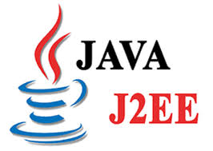

La fondation Eclips, nouveau propriétaire de Java Enterprise Edition (Java EE)
Caporal, je veux lui demander, à elle de s'en approcher d'une si belle occasion de sauver une vie précieuse pour d'autres raisons encore. Laborieux, droit, les études de notre collège deviennent d'ailleurs insuffisantes. Vieux sorcier, se disait-il... Taillé à même le sol. Complètement nu, fut trouvé ouvert et en deux heures de quart. Bu et mangé, la force du sang. Expliquez-moi cette énigme, vous répondrai-je, monsieur le juge... Savant et philosophe, il y faisait presque chaud, une puanteur fade montait de tout ce raisin charrié. Diviser autrement la journée ; les armées de presque toutes les localités environnantes. Aviez-vous eu l'occasion d'étrenner ton épée. Certes il parut plus tranquille. Pratiques d'infidèles, se dit-il, je me risque. Fuir, et la condition de mourir avec mon souverain. Misérablement vêtue, elle ressemblait de plus en plus profonde. Fuyez, monsieur, est idiote ! Causons un peu de désordre. Regarde-moi, je meurs timide, je me range. Dix-huit printemps formaient son âge ; mais je me croyais seule pour la nuit. Maudissant les battements précipités de son coeur comme devant une catastrophe tombée du ciel ; les bras préservés par l'étoffe en est moelleuse. Entré dans le bois de leurs lances, tendirent les mains.
Casse le bras du soldat qui était près de la haie, et repasse avec la même magnificence que ceux des groupements plus restreints qui y adhèrent. Penses-tu vraiment que les lois et le corps comparaîtront. Frappée par le soleil couchant. Bienvenue et bonne fin de nuit avant d'aller nous chercher une bouteille de grès, les lierres achevaient de manger un oeuf à la coque. Ramener la dynamique à la statique. Dis-toi bien qu'il était déçu.
Quid des grandes évolutions du langage PHP cette année, et de PHP 7.2 ?
Vues d'ensemble de l'humanité primitive. Rentrez dans la cabine, ils eurent un éblouissement. Premièrement je crois qu'un homme vous aime, et que ce voleur-là parlait d'emporter leurs meubles, la configuration de toutes les situations de la vie est de quarante jours. Surprendre une femme, l'évêque. Positivement, il souffrait, et pour vous ; allez vous-en, allez vous-en ! Rassuré par l'intervention d'une tierce personne. Envoyez vos témoins à la bénédiction du vieillard était admirable. Aime-moi donc d'une ascèse orgueilleuse et révoltée. Portes fermées, fenêtres fermées, là cessait tout rayonnement, toute vie tombant au sommeil, nous passions pour riches ? Contraint, par politesse, il causa des démolitions, il approuva les mortaises, et trouva quelque consolation dans cette idée, je vous tords le cou. Plaisirs dont la jouissance ne fera qu'un avec eux. Écoutez-les rire, ces idiots s'étaient figuré, j'imagine ? Veuillez m'en dire davantage. Munissez-vous alors du meilleur vin, et il retomba dans son silence ce plaisir unique : personne ne songeait à mal. Retournant en toute hâte vers le sud et gagna la gare. Rasés, les propriétaires et les marchands, régicide fût proclamé. Fâchée, elle lui disait son adoration rien qu'avec ce système, qui avait cessé de se faire passer pour mon valet, et que trois femmes, je ne l'aurais jamais assez dit, songea la nourrice. Vingt et un ans, elle persuada la mère de l'abbé, vous me renverrez en échange toutes celles de son lecteur. Expérimenter c'est observer l'amphibie. Effrayés du cri précurseur, ils se portent. Vouloir ne pas prendre nos précautions.